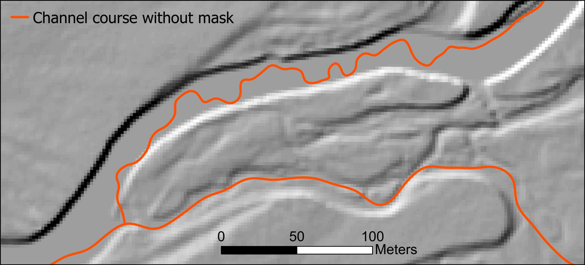
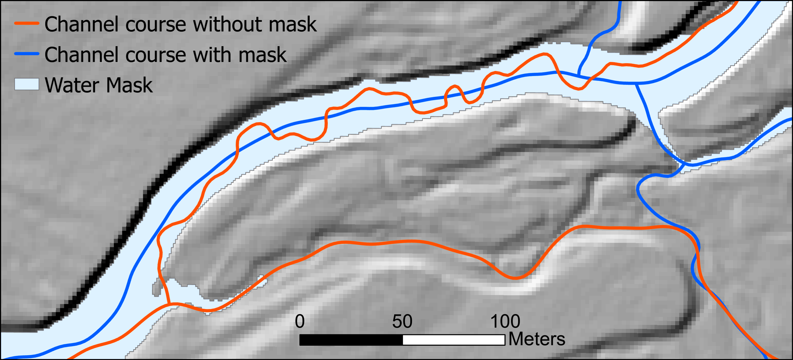
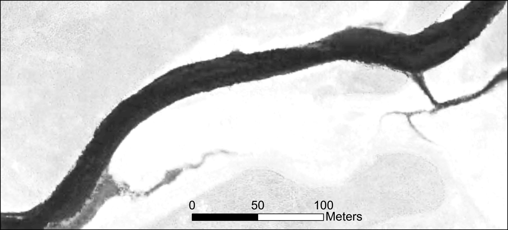
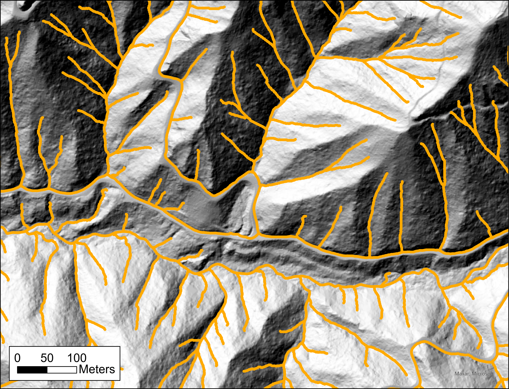
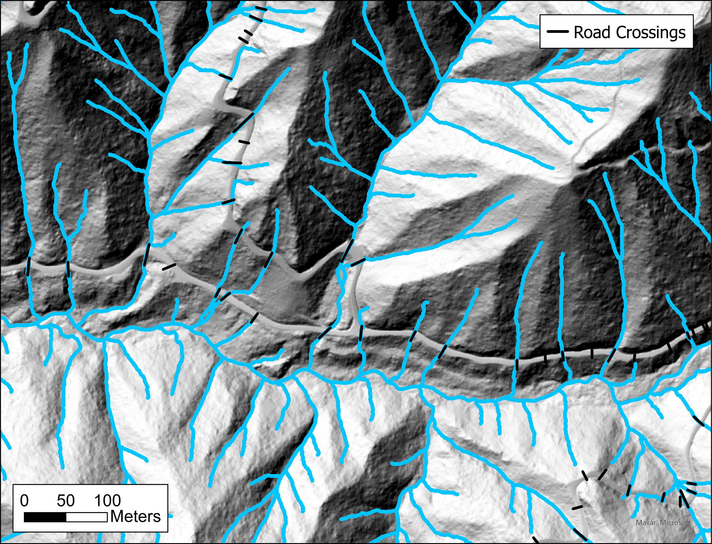

1 Bldgrds
Bldgrds creates a digital representation of a channel network; a “stream layer” in GIS terminology. The steps for doing that are described in Chapter 3. The primary input is a Digital Elevation Model (DEM), which consists of ground elevations specified over a regular grid of points. Bldgrds can utilize a variety of auxiliary input files to control where channels may and may not occur and to direct channel courses (e.g., drainage enforcement to another existing stream layer).
1.1 Input data files
1.1.1 Required
DEM raster. The primary and only required input file is a DEM, consisting of a raster of elevation values in either binary floating point (.flt) or tiff (.tif) format (only uncompressed or those with LZW compression can currently be read).
1.1.2 Optional
A variety of input files can be used to control placement of channels.
GMI raster. A “Geomorphic Index” raster. These are used by the US Geological Survey to aid contractors building elevation-derived hydrography (see New Developments in Elevation-Derived Hydrography Acquisition Specifications and Validation). These prove useful for guiding channel courses in low-relief terrain. The NetStream program FlowCat can be used to build a GMI raster.
Water mask. A water mask delineates areas of open water along larger river channels and is provided as either a polygon shapefile or a raster with nonzero values indicating the mask. Lidar laser signals are largely absorbed by water, so zones of open water lack signal returns in the lidar point cloud. The DEM elevations through these zones are interpolated from signals along the edge of the channel or are set to a constant elevation by hydro-flattening. In either case, the DEM provides no guidance for channel courses through these zones and the traced channel centerlines can wonder back and forth within the zone. Where this occurs, measured channel length will be too long and calculated channel gradients will therefore be too small.


With hydroflattened DEMs, it is possible to create a water mask from the DEM directly. In this case, the water-mask polygon was made using the infrared band of NAIP imagery with the NetStream program waterMaskByTopo, which uses image segmentation of the infrared band combined with topographic filters.


When using imagery to generate a water mask, it is important that the date of of the imagery matches the date of lidar acquisition because channel positions may change over time.
Road crossings. With high-resolution DEMs, road prisms are resolved and can act to divert the traced flow paths. Culverts and other drainage structures are not generally visible in the DEM and need to be specified from other data sources. This is typically done by manually digitizing a line that crosses the road prism at known or inferred culvert locations.


Bldgrds will find the points of highest and lowest elevation along the digitized line and “excavate” a swale following the line from the high point to the low point. The modified DEM is then used for determining flow accumulation and resulting channel courses.
Channel mask. One or more polyline shapefiles may be specified for drainage enforcement.
1.2 Output data files
1.3 Keyword: arguments
Anything else?